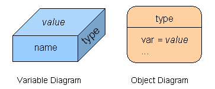
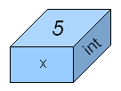
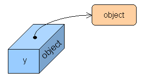
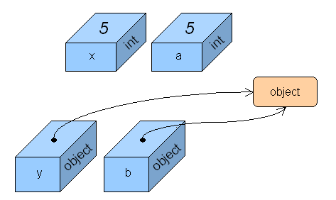
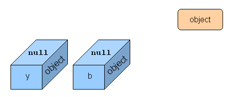
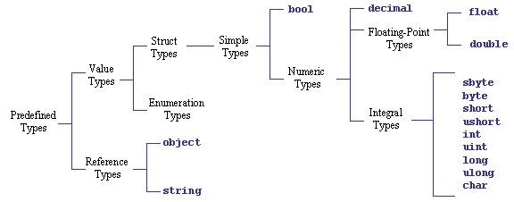
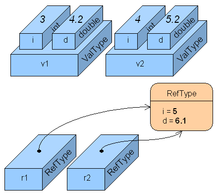

Copyright©1996-2003
Specialized Systems Consultants, Inc.
首頁(H)｜HOWTO(T)｜指南(G)｜FAQ(F)｜手冊頁(M)｜Linux電子報(L)｜LinuxFocus(S)
Linux電子報首頁｜目錄｜FAQ
讓 Linux 更加有趣呦！
In my previous article, I introduced the C# programming language and explained how it works in the context of the Mono environment, an open-source implementation of Microsoft's .NET framework. I will now go on to some details on the data types supported by the C# programming language.
In the subsequent discussion I will use the following diagrammatic notation to represent variables and objects:

The variable diagram is a cubic figure that depicts three traits (name, value and type) relevant during the compilation and execution of a program. In the von Neumann architecture tradition, we will consider a variable as a chunk of memory in which we hold a value that can be read or overwritten. The object diagram is a rounded edge rectangle that denotes an object created at runtime and allocated in a garbage collectable heap. For any object in a certain point in time, we know what type (class) it is, and the current values of its instance variables.
In the C# programming language, types are divided in three categories:
In a variable that holds a value type, the data itself is directly contained within the memory allotted to the variable. For example, the following code
int x = 5;
declares an 32-bit signed integer variable, called x, initialized
with a value of 5. The following figure represents the corresponding variable
diagram:

Note how the value 5 is contained within the variable itself.
On the other hand, a variable that holds a reference type contains
the address of an object stored in the heap. The following code declares
a variable called y of type object which gets
initialized, thanks to the new operator, so that it refers
to a new heap allocated object instance (object
is the base class of all C# types, but more of this latter).
object y = new object();
The corresponding variable/object diagram would be:

In this case, we can observe that the "value" part of the variable diagram contains the start of an arrow that points to the referred object. This arrow represents the address of the object inside the memory heap.
Now, let us analyze what happens when we introduce two new variables and do some copying from the original variables. Assume we have the following code:
int a = x; object b = y;
The result is displayed below:

As can be observed, a has a copy of the value of x.
If we modify the value of one of these variables, the other variable would
remain unchanged. In the case of y and b, both
variables refer to the same object. If we alter the state of the object
using variable y, then the resulting changes will be observable
using variable b, and vice versa.
Aside from references into the heap, a reference type variable may also
contain the special value null, which denotes a nonexistent
object. Continuing with the last example, if we have the statements
y = null; b = null;
then variables y and b no longer refer to any
specific object, as shown below:

As can be seen, all references to the object instance have been lost. This object has now turned into "garbage" because no other live reference to it exists. As noted before, in C# the heap is garbage collected, which means that the memory occupied by these "dead" objects is at sometime automatically disposed and recycled by the runtime system. Other languages, such as C++ and Pascal, do not have this kind of automatic memory management scheme. Programmers for these languages must explicitly free any heap allocated memory chunks that the program no longer requires. Failing to do so gives place to memory leaks, in which certain portions of memory in a program are wasted because they haven't been signaled for reuse. Experience has shown that explicit memory de-allocation is cumbersome and error prone. This is why many modern programming languages (such as Java, Python, Scheme and Smalltalk, just to name a few) also incorporate garbage collection as part of their runtime environment.
Finally, a pointer type gives you similar capabilities as those
found with pointers in languages like C and C++. It is important to understand
that both pointers and references actually represent memory addresses, but
that's where their similarities end. References are tracked by the garbage
collector, pointers are not. You can perform pointer arithmetic on pointers,
but not on references. Because of the unwieldy nature associated to pointers,
they can only be used in C# within code marked as unsafe. This
is an advanced topic and I won't go deeper into this matter at this time.
C# has a rich set of predefined data types which you can use in your programs. The following figure illustrates the hierarchy of the predefined data types found in C#:

Here is a brief summary of each of these types:
| Type | Size in Bytes |
Description |
|---|---|---|
bool |
1 | Boolean value. The only valid literals are true
and false. |
sbyte |
1 | Signed byte integer. |
byte |
1 | Unsigned byte integer. |
short |
2 | Signed short integer. |
ushort |
2 | Unsigned short integer. |
int |
4 | Signed integer. Literals may be in decimal (default)
or hexadecimal notation (with an 0x prefix). Examples:
26, 0x1A |
uint |
4 | Unsigned integer. Examples: 26U, 0x1AU
(mandatory U suffix) |
long |
8 | Signed long integer. Examples: 26L,
0x1AL (mandatory L suffix) |
ulong |
8 | Unsigned long integer. Examples: 26UL,
0x1AUL (mandatory UL suffix) |
char |
2 | Unicode character. Example: 'A' (contained within single quotes) |
float |
4 | IEEE 754 single precision floating point number.
Examples: 1.2F, 1E10F (mandatory F
suffix) |
double |
8 | IEEE 754 double precision floating point number.
Examples: 1.2, 1E10, 1D (optional
D suffix) |
decimal |
16 | Numeric data type suitable for financial and monetary
calculations, exact to the 28th decimal place. Example: 123.45M
(mandatory M suffix) |
object |
8+ | Ultimate base type for both value and reference types. Has no literal representation. |
string |
20+ | Immutable sequence of Unicode characters. Example:
"hello world!\n" (contained within double quotes) |
C#'s has a unified type system such that a value of any type
can be treated as an object. Every type in C# derives, directly or indirectly,
from the object class. Reference types are treated as objects
simply by viewing them as object types. Value types are treated
as objects by performing boxing and unboxing operations. I
will go deeper into these concepts in my next article.
C# allows you to define new reference and value types. Reference types
are defined using the class construct, while value types are
defined using struct. Lets see them both in action in the following
program:
struct ValType {
public int i;
public double d;
public ValType(int i, double d) {
this.i = i;
this.d = d;
}
public override string ToString() {
return "(" + i + ", " + d + ")";
}
}
class RefType {
public int i;
public double d;
public RefType(int i, double d) {
this.i = i;
this.d = d;
}
public override string ToString() {
return "(" + i + ", " + d + ")";
}
}
public class Test {
public static void Main (string[] args) {
// PART 1
ValType v1;
RefType r1;
v1 = new ValType(3, 4.2);
r1 = new RefType(4, 5.1);
System.Console.WriteLine("PART 1");
System.Console.WriteLine("v1 = " + v1);
System.Console.WriteLine("r1 = " + r1);
// PART 2
ValType v2;
RefType r2;
v2 = v1;
r2 = r1;
v2.i++; v2.d++;
r2.i++; r2.d++;
System.Console.WriteLine("PART 2");
System.Console.WriteLine("v1 = " + v1);
System.Console.WriteLine("r1 = " + r1);
}
}
First we have the structure ValType. It defines two instance
variables, i and d of type int and
double, respectively. They are declared as public,
which means they can be accessed from any part of the program where this
structure is visible. The structure defines a constructor, which has the
same name as the structure itself and, contrary to method definitions, has
no return type. Our constructor is in charge of the initialization of the
two instance variables. The keyword this is used here to obtain
a reference to the instance being created and has to be used explicitly
in order to avoid the ambiguity generated when a parameter name clashes
with the an instance variable name. The structure also defines a method
called ToString, that returns the external representation of
a structure instance as a string of characters. This method overrides the
ToString method (thus the use of the override
modifier) defined in this structure's base type (the object
class). The body of this method uses the string concatenation operator (+)
to generate a string of the form "(i, d)", where
i and d represent the current value of those instance variables,
and finally returns the expected result.
As can be observed, the RefType class has basically the same
code as ValType. Let us examine the runtime behavior of variables
declared using both types so we can further understand their differences.
The Test class has a Main method that establishes
the program entry point. In the first part of the program (marked with the
"PART 1" comment) we have one value type variable and one reference
type variable. This is how they look after the assignments:
The value type variable, v1, has its instance variables contained
within the variable itself. The new operator used in the assignment
v1 = new ValType(3, 4.2);
does not allocate any memory in the heap as we've learned from other languages.
Because ValType is a value type, the new operator is only used
in this context to call its constructor and this way initialize the instance
variables. Because v1 is a local variable, it's actually stored
as part of the method's activation record (stack frame), and it exists just
because it's declared.
Objects referred by reference type variables have to be created explicitly at some point in the program. In the assignment
r1 = new RefType(4, 5.1);
the new operator does the expected dynamic memory allocation
because in this case RefType is a reference type. The corresponding
constructor gets called immediately afterwards. Variable v2
is also stored in the method's activation record (because it's also a local
variable) but it's just big enough to hold the reference (address) of the
newly created instance. All the instance's data is in fact stored in the
heap.
Now lets check what happens when the second part of the program (marked
after the "PART 2" comment) is executed. Two new variable are
introduced and they are assigned the values of the two original ones. Then,
each of the instance variables of the new variables are incremented by one
(using the ++ operator).

When v1 is copied into v2, each individual instance
variable of the source is copied individually into the destination, thus
producing totally independent values. So any modification done over v2
doesn't affect v1 at all. This is not so with r1
and r2 in which only the reference (address) is copied. Any
change to the object referred by r2 is immediately seen by
r1, because they both refer in fact to the same object.
If you check the type hierarchy diagram above, you will notice that simple
data types such as int, bool and char
are actually struct value types, while object
and string are class reference types.
If you want to compile and run the source code of the above example, type at the Linux shell prompt:
mcs varsexample.cs
mono varsexample.exe
The output should be:
PART 1 v1 = (3, 4.2) r1 = (4, 5.1) PART 2 v1 = (3, 4.2) r1 = (5, 6.1)
Copyright © 2002, Ariel Ortiz Ramirez. Copying license Published in Issue 85 of Linux Gazette, December 2002
首頁(H)｜HOWTO(T)｜指南(G)｜FAQ(F)｜手冊頁(M)｜Linux電子報(L)｜LinuxFocus(S)